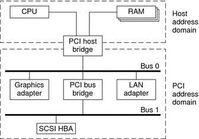

Writing Device Drivers
|
||||||||||||||||||||||||||||||||||||||||||||||||||||
|
Part I Designing Device Drivers for the Solaris Platform 1. Overview of Solaris Device Drivers 2. Solaris Kernel and Device Tree 5. Managing Events and Queueing Tasks 7. Device Access: Programmed I/O 10. Mapping Device and Kernel Memory 14. Layered Driver Interface (LDI) Part II Designing Specific Kinds of Device Drivers 15. Drivers for Character Devices 18. SCSI Host Bus Adapter Drivers 19. Drivers for Network Devices Part III Building a Device Driver 21. Compiling, Loading, Packaging, and Testing Drivers 22. Debugging, Testing, and Tuning Device Drivers 23. Recommended Coding Practices B. Summary of Solaris DDI/DKI Services C. Making a Device Driver 64-Bit Ready |
Bus SpecificsThis section covers addressing and device configuration issues specific to the buses that the Solaris platform supports. PCI Local BusThe PCI local bus is a high-performance bus designed for high-speed data transfer. The PCI bus resides on the system board. This bus is normally used as an interconnect mechanism between highly integrated peripheral components, peripheral add-on boards, and host processor or memory systems. The host processor, main memory, and the PCI bus itself are connected through a PCI host bridge, as shown in Figure A-3. A tree structure of interconnected I/O buses is supported through a series of PCI bus bridges. Subordinate PCI bus bridges can be extended underneath the PCI host bridge to enable a single bus system to be expanded into a complex system with multiple secondary buses. PCI devices can be connected to one or more of these secondary buses. In addition, other bus bridges, such as SCSI or USB, can be connected. Every PCI device has a unique vendor ID and device ID. Multiple devices of the same kind are further identified by their unique device numbers on the bus where they reside. Figure A-3 Machine Block DiagramThe PCI host bridge provides an interconnect between the processor and peripheral components. Through the PCI host bridge, the processor can directly access main memory independent of other PCI bus masters. For example, while the CPU is fetching data from the cache controller in the host bridge, other PCI devices can also access the system memory through the host bridge. The advantage of this architecture is that this architecture separates the I/O bus from the processor's host bus. The PCI host bridge also provides data access mappings between the CPU and peripheral I/O devices. The bridge maps every peripheral device to the host address domain so that the processor can access the device through programmed I/O. On the local bus side, the PCI host bridge maps the system memory to the PCI address domain so that the PCI device can access the host memory as a bus master. Figure A-3 shows the two address domains. PCI Address DomainThe PCI address domain consists of three distinct address spaces: configuration, memory, and I/O space. PCI Configuration Address SpaceConfiguration space is defined geographically. The location of a peripheral device is determined by its physical location within an interconnected tree of PCI bus bridges. A device is located by its bus number and device (slot) number. Each peripheral device contains a set of well-defined configuration registers in its PCI configuration space. The registers are used not only to identify devices but also to supply device configuration information to the configuration framework. For example, base address registers in the device configuration space must be mapped before a device can respond to data access. The method for generating configuration cycles is host dependent. In x86 machines, special I/O ports are used. On other platforms, the PCI configuration space can be memory-mapped to certain address locations corresponding to the PCI host bridge in the host address domain. When a device configuration register is accessed by the processor, the request is routed to the PCI host bridge. The bridge then translates the access into proper configuration cycles on the bus. PCI Configuration Base Address RegistersThe PCI configuration space consists of up to six 32-bit base address registers for each device. These registers provide both size and data type information. System firmware assigns base addresses in the PCI address domain to these registers. Each addressable region can be either memory or I/O space. The value contained in bit 0 of the base address register identifies the type. A value of 0 in bit 0 indicates a memory space and a value of 1 indicates an I/O space. The following figure shows two base address registers: one for memory and the other for I/O types. Figure A-4 Base Address Registers for Memory and I/O
PCI Memory Address SpacePCI supports both 32-bit and 64-bit addresses for memory space. System firmware assigns regions of memory space in the PCI address domain to PCI peripherals. The base address of a region is stored in the base address register of the device's PCI configuration space. The size of each region must be a power of two, and the assigned base address must be aligned on a boundary equal to the size of the region. Device addresses in memory space are memory-mapped into the host address domain so that data access to any device can be performed by the processor's native load or store instructions. PCI I/O Address SpacePCI supports 32-bit I/O space. I/O space can be accessed differently on different platforms. Processors with special I/O instructions, like the Intel processor family, access the I/O space with in and out instructions. Machines without special I/O instructions will map to the address locations corresponding to the PCI host bridge in the host address domain. When the processor accesses the memory-mapped addresses, an I/O request will be sent to the PCI host bridge, which then translates the addresses into I/O cycles and puts them on the PCI bus. Memory-mapped I/O is performed by the native load/store instructions of the processor. PCI Hardware Configuration FilesHardware configuration files should be unnecessary for PCI local bus devices. However, on some occasions drivers for PCI devices need to use hardware configuration files to augment the driver private information. See the driver.conf(4) and pci(4) man pages for further details. PCI ExpressThe standard PCI bus has evolved into PCI Express. PCI Express is the next generation high performance I/O bus for connecting peripheral devices in such applications as desktop, mobile, workstation, server, embedded computing and communication platforms. PCI Express improves bus performance, reduces overall system cost and takes advantage of new developments in computer design. PCI Express uses a serial, point-to-point type interconnect for communication between two devices. Using switches enables users to connect a large number of devices together in a system. Serial interconnect implies fewer pins per device package, which reduces cost and makes the performance highly scalable. The PCI Express bus has built-in features to accommodate the following technologies:
A PCI Express interconnect that connects two devices together is called a link. A link can either be x1, x2, x4, x8, x12, x16 or x32 bidirectional signal pairs. These signals are called lanes. The bandwidth (x1) of each lane is 500 MB/sec in duplex mode. Although PCI-X and PCI Express have different hardware connections, the two buses are identical from a driver writer's point of view. PCI-X is a shared bus. For example, all the devices on the bus share a single set of data lines and signal lines. PCI-Express is a switched bus, which enables more efficient use of the bandwidth between the devices and the system bus. For more information on PCI Express, please refer to the following web site: http://www.pcisig.com/ SBusTypical SBus systems consist of a motherboard (containing the CPU and SBus interface logic), a number of SBus devices on the motherboard itself, and a number of SBus expansion slots. An SBus can also be connected to other types of buses through an appropriate bus bridge. The SBus is geographically addressed. Each SBus slot exists at a fixed physical address in the system. An SBus card has a different address, depending on which slot it is plugged into. Moving an SBus device to a new slot causes the system to treat this device as a new device. The SBus uses polling interrupts. When an SBus device interrupts, the system only knows which of several devices might have issued the interrupt. The system interrupt handler must ask the driver for each device whether that device is responsible for the interrupt. SBus Physical Address SpaceThe following table shows the physical address space layout of the Sun UltraSPARC 2 computer. A physical address on the UltraSPARC 2 model consists of 41 bits. The 41-bit physical address space is further broken down into multiple 33-bit address spaces identified by PA(40:33). Table A-1 Device Physical Space in the Ultra 2
Physical SBus AddressesThe SBus has 32 address bits, as described in the SBus Specification. The following table describes how the Ultra 2 uses the address bits. Table A-2 Ultra 2 SBus Address Bits
This addressing scheme yields the Ultra 2 addresses shown in Table A-1. Other implementations might use a different number of address bits. The Ultra 2 has seven SBus slots, four of which are physical. Slots 0 through 3 are available for SBus cards. Slots 4-12 are reserved. The slots are used as follows:
SBus Hardware Configuration FilesHardware configuration files are normally unnecessary for SBus devices. However, on some occasions, drivers for SBus devices need to use hardware configuration files to augment the information provided by the SBus card. See the driver.conf(4) and sbus(4) man page for further details. |
|||||||||||||||||||||||||||||||||||||||||||||||||||
|